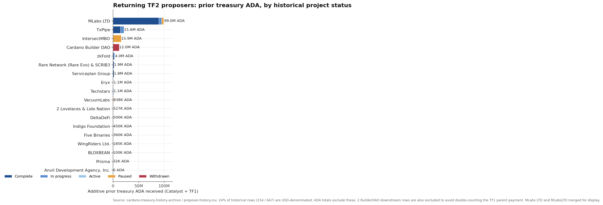
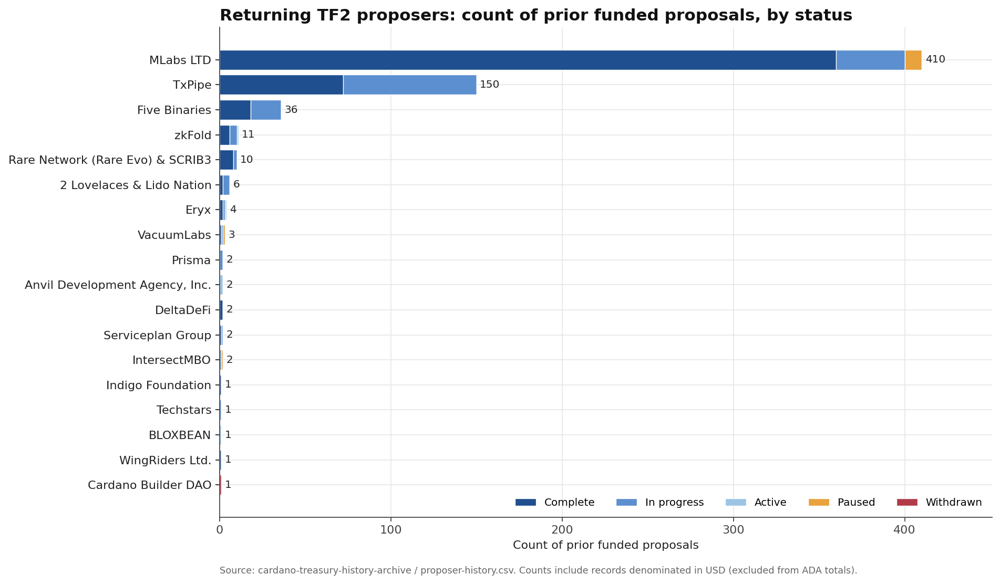
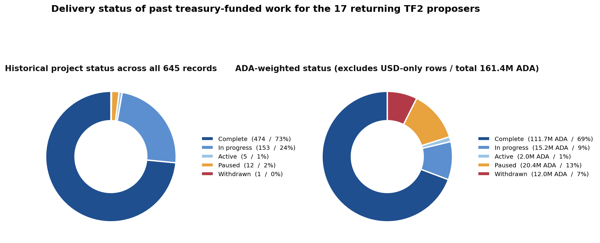
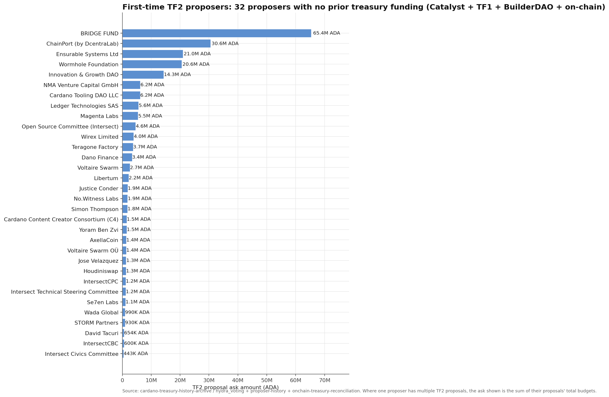

The Cardano treasury history archive joins each of the 69 current TF2 proposals to historical
records from Project Catalyst (funds 1–15), Treasury Fund 1, and non-additive BuilderDAO
downstream detail, then cross-checks against on-chain TreasuryWithdrawals
governance actions. 19 of the 51
unique TF2 proposers appear in that historical dataset; the remaining 32 have no
prior treasury record under any archive source. None of the 32 first-time
proposers were reclassified after the on-chain cross-check.




totalBudget from the Hydra Voting snapshot).
| Proposer | Total prior ADA | Records | Complete | In progress | Paused | Withdrawn | Flagged |
|---|---|---|---|---|---|---|---|
| MLabs LTD | 98,952,250 | 410 | 360 | 40 | 10 | 0 | 10 |
| TxPipe | 21,567,275 | 150 | 72 | 78 | 0 | 0 | 0 |
| IntersectMBO | 15,887,428 | 2 | 0 | 1 | 1 | 0 | 1 |
| Cardano Builder DAO | 12,000,000 | 1 | 0 | 0 | 0 | 1 | 1 |
| zkFold | 4,016,000 | 11 | 6 | 4 | 0 | 0 | 0 |
| Rare Network (Rare Evo) & SCRIB3 | 1,915,400 | 10 | 8 | 2 | 0 | 0 | 0 |
| Serviceplan Group | 1,840,000 | 2 | 1 | 1 | 0 | 0 | 0 |
| Eryx | 1,104,000 | 4 | 2 | 1 | 0 | 0 | 0 |
| Techstars | 1,079,000 | 1 | 0 | 1 | 0 | 0 | 0 |
| VacuumLabs | 838,400 | 3 | 1 | 1 | 1 | 0 | 1 |
| 2 Lovelaces & Lido Nation | 527,200 | 6 | 2 | 4 | 0 | 0 | 0 |
| DeltaDeFi | 500,000 | 2 | 2 | 0 | 0 | 0 | 0 |
| Indigo Foundation | 450,000 | 1 | 1 | 0 | 0 | 0 | 0 |
| Five Binaries | 360,000 | 38 | 18 | 18 | 0 | 0 | 0 |
| WingRiders Ltd. | 185,000 | 1 | 1 | 0 | 0 | 0 | 0 |
| BLOXBEAN | 99,600 | 1 | 0 | 0 | 0 | 0 | 0 |
| Prisma | 32,400 | 2 | 0 | 2 | 0 | 0 | 0 |
| Anvil Development Agency, Inc. | 0 | 2 | 0 | 0 | 0 | 0 | 0 |
| Proposer | TF2 ask (ADA) | TF2 proposals |
|---|---|---|
| BRIDGE FUND | 65,405,000 | 1 |
| ChainPort (by DcentraLab) | 30,570,400 | 1 |
| Ensurable Systems Ltd | 21,040,966 | 2 |
| Wormhole Foundation | 20,600,000 | 1 |
| Innovation & Growth DAO | 14,304,640 | 1 |
| NMA Venture Capital GmbH | 6,200,600 | 1 |
| Cardano Tooling DAO LLC | 6,180,000 | 1 |
| Ledger Technologies SAS | 5,613,500 | 3 |
| Magenta Labs | 5,450,000 | 2 |
| Open Source Committee (Intersect) | 4,601,000 | 1 |
| Wirex Limited | 3,961,538 | 1 |
| Teragone Factory | 3,739,559 | 1 |
| Dano Finance | 3,399,000 | 1 |
| Voltaire Swarm | 2,664,095 | 1 |
| Libertum | 2,193,900 | 1 |
| Justice Conder | 1,874,600 | 1 |
| No.Witness Labs | 1,853,996 | 2 |
| Simon Thompson | 1,802,500 | 1 |
| Cardano Content Creator Consortium (C4) | 1,524,400 | 1 |
| Yoram Ben Zvi | 1,519,250 | 1 |
| AxellaCoin | 1,390,508 | 1 |
| Voltaire Swarm OÜ | 1,350,330 | 1 |
| Jose Velazquez | 1,339,000 | 1 |
| Houdiniswap | 1,311,190 | 1 |
| IntersectCPC | 1,240,000 | 1 |
| Intersect Technical Steering Committee | 1,193,000 | 1 |
| Se7en Labs | 1,112,400 | 1 |
| Wada Global | 989,901 | 1 |
| STORM Partners | 929,699 | 1 |
| David Tacuri | 653,947 | 1 |
| IntersectCBC | 600,000 | 1 |
| Intersect Civics Committee | 442,900 | 1 |